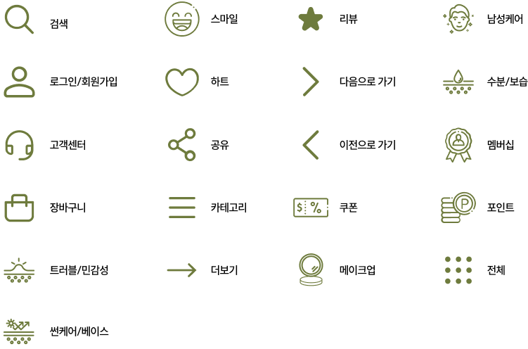

기능성 화장품 브랜드
NOTS
“내 아이 피부에도 바를 수 있는 화장품”
피부로 고생하는 내 아이의 피부에도 마음 편하게 바를 수 있는 화장품을 만드는 것이 목표이며,
더 많은 사람들을 위해 가장 안전하고 믿고 사용할 수 있는 제품을 만드는 기능성 화장품 브랜드입니다.
Plan
Background
- 민감성 피부 타입 소비자 늘면서 안전한 화장품 선호
- 민감성 피부 관리를 원하는 소비자가 많아지면서 더마스코메틱 산업이 발전하고 있음
- 제품 라벨에 “클린”이라는 키워드가 들어갔을 때 구매 결정을 좌우할 가능성이 높음
- 연령ㆍ피부 타입마다 피부 고민도 제각각
- ‘슬로우에이징(Slow aging)’ 트렌드의 영향으로 기능성 화장품에 대한 관심이 많아짐
- 브랜드에 의해 화장품을 선택하기 보다는 전성분표를 바탕으로 피부타입별 효과적인 유효성분을 파악하고, 실사용자의 리뷰를 바탕으로 제품을 선택하는 경향을 보이고 있음
- 지속 가능하고, 자원을 절약하며, 부작용 없는 화장품의 관심이 높아지고 있음
- 바이오 의학, 정보 과학 등 여러 기술이 향상하면서 화장품과 과학기술의 융합이 이루어지고 있음
- 자연스러운 스킨케어 루틴에 대한 관심이 높아지면서 천연 화장품의 중요성이 점점 커지고 있음
Concept
내 아이 피부에도 바를 수 있는 안전하고 믿을 수 있는 화장품
Target & Keywords
- 타겟
- 10대~30대 소비자
- 민감한 피부를 가진 소비자
- 천연성분과 비건 제품에 관심이 많은 소비자
- 직접 구매해보고 리뷰 작성을 즐겨하는 소비자
키워드
#내추럴 #안정적인 #신뢰 #안전 #편안함Persona
구체적인 타겟 사용자 설계를 위해 2가지 유형의 페르소나를 정의하고 사용자가 기능성 화장품을 찾아보는 과정을 단계별로 분석하였습니다.
Information Architecture
Design System
Symbol & Logo
내추럴적인 느낌을 내기 위해 그린 컬러를 사용하였고 폰트 또한 자연적인 느낌을 주기 위해 제작
Typography
- 한글‘Pretendard’
- Pretendard 프리텐다드 Light
- Pretendard 프리텐다드 Regular
- Pretendard 프리텐다드 SemiBold
- 영문‘Hanuman’
- Hanuman Light
- Hanuman Regular
Color
Main Color
Sub Color
Point Color
Icon
svg 형식의 파일을 적용하여 확대해도 깨지지 않습니다.
Prototype
Main
Sub
Login